This tutorial is mainly meant for scientists, but several tips can be useful for any talk.
Why is it useful to give good talks?
Presenting your work (to a committee, to the public, to an audience expert in your field):
- helps to establish new collaborations
- helps other scientists to know and use your results
- helps to develop new science objectives
- helps to get a grant/job
- helps to tell your story and your vision
What You'll Learn
- how to adapt your talk to your goal
- different parts that make up a talk (story line, design, text, images, voice)
- tips on how to improve each aspect in a presentation
- reconsider some misconception
What You'll not Learn
❌ professional advice
❌ how to make a brilliant talk
❌ how to become a professional communicator
Acknowledgments
Material contained here is based on:
- Professional experience
- Feedback I got from people over the years
- Coursera Presentation Skills Specialization by Alexei Kapterev that I attended
- Lectures on spoken communication by my father (Massimo Pettorino)
Set your goals
The first step into preparing your talk is identifying what are your objectives: are you applying for a job, looking for a new expert collaboration, giving an outreach talk to the public, are you teaching, do you want to learn something yourself?
My personal goals for this tutorial:
- transfer knowledge: share with you what I have learned so far
- learn how to prepare a codelab tutorial
- contribute to Lab activity
- prepare this tutorial in one week
In the next section you will find examples of talks aiming at different goals. Before reading further, can you think of how would you adapt your talk to the following use cases? How are they similar and how the following talks will differ? What should you focus on? What would you rather not do?
- 1h Lecture
- 20 m presentation to a committee panel
- 40 m scientific seminar to experts in your domain
- 1h colloquium
- Public outreach talk (ex. TED)
⚠️⚠️⚠️⚠️⚠️⚠️⚠️⚠️⚠️⚠️ WAIT BEFORE READING FURTHER ⚠️⚠️⚠️⚠️⚠️⚠️⚠️⚠️⚠️⚠️
Below you find a possible description of each of the following use cases:
- 1h Lecture
- 20 m presentation to a committee panel
- 40 m scientific seminar to experts in your domain
- 1h colloquium
- Public outreach talk (ex. TED)
1h Lecture
✅ Define everything and start from basic concepts
✅ Simplify communication as much as possible
- talk slowly
- go step by step
- make your design very readable
- maybe use images
- examples
- repeat the same concept several times
✅ Adapt to feedback
- Ask questions to your students
- Ask for questions from your students
- May decide to explore less/more topics
✅ Consider interactive tools, live exercises, video.
✅ You may include some historical note on past attempts/developments
❌ You won't typically focus on your specific research
⏰Time: Density of topics will be flexible, not really important to cover all topics within the 1h lecture.
20 m presentation to a committee panel
The committee will be asked to compare the story of each candidate. The talk is your chance to give *your* version of your story
✅ how you are a good fit
✅ what is your specific contribution
✅ your responsibilities
Convince them that you can:
✅ explain clearly what you know
✅ value what they know
✅ be useful by providing something they don't know
❌ You are not teaching
⏰ Very efficient, it has to fit 20m:
- 5m introduce yourself and the timely challenge that needs you to be solved
- 10m your highlights and how you fit and complete the expertise of the group
- 5m on proposals for joint projects that will lead you and the group to reach your common timely goal. Give your vision on a short/long term timeline.
40 m scientific seminar to experts in your domain
✅ Pick a specific new paper you wrote or result you obtained
✅ Give the context / motivation for your paper to exist
✅ Illustrate your new idea / implementation / result
✅ Clearly add the arxiv number of your paper to the slides
✅ Mention potential developments, targeted at the audience expertise
⏰ Take the time to explain the idea, main results, describe a scientific plot in detail.
1h colloquium
✅Give the context, with a very general introduction that everyone can understand (~15 m)
✅Describe main challenges in the field, not necessarily related to your work only (~10 m)
✅Describe how your work fits into addressing these challenges (~10 m)
✅Describe one result you got (~ 10 m) (for the experts in your field)
✅Describe potential developments in this field (~10 m) (for everyone)
✅Conclusions with your short and long term vision of this field (~5 m)
❌Not focused on a specific paper you wrote.
Public outreach talk (ex. TED)
✅ Adapt design to a large and non expert audience
✅Very little text
✅ Story telling may involve more twists
✅ Voice
✅ Body language
✅ Larger images
✅ Videos
❌Equations
❌Baby-talking
What you are saying is not important ‘per sé': it becomes important if someone listens. It's in your interest to help your audience! If you know your audience, and what their expectation is, you can better target your talk and manage attention.
Who are you talking to?
- One person 💁
- Panel 👤👤👤👤👤
- Large audience 👤👤👤👤👤👤👤👤👤👤👤👤👤👤👤👤
- Expert in your field 🎓
- Expert in another field 🎓
- Students 📚
- General public 🐼🐯🐑🐥🐬🐙 🐡🐶⛄
What is their expectation?
- Learn about your work
- Learn about the state of the art
- Learn about a new application of a tool of which they are expert
- Make an evaluation
- Find a new collaboration
Depending on the situation, you may have to compromise between your goal and your audience expectation.
Value your audience effort
In most cases, people in the audience:
- walked to a seminar room or connected to a link
- had to interrupt their work
- are spending their time to listen to you rather than doing something else
- may have been asked to attend your talk
Magic!
Identify the location and which tools you have available
- Small room
- Large auditorium
- Remotely
- Laptop screen
- Large screen
- Without a screen
- Can you show images, videos?
- Do you have internet connection?
- Do you have a microphone?
What do you want people to retain from your talk?
What are your keywords? Identify:
- what you want to say
- what you don't want to say
and make sure you explicitly give your message at the start, at the end, and whenever possible also within your talk.
Story telling
A standard outline would typically include: introduction, build-up and conclusions.
Introduction
This is the part where you have to first capture attention. In one sentence, what is your talk about?
- Explain in one sentence what your talk is about and what you are aiming at
- What is the problematic you want to address?
- What is the state of the art?
- Introduce characters (main keywords, topic)
Development and build-up
- Characters evolution: new idea, a new approach
- Describe your results (examples, data, plot(s))
- Make it interesting
- Did you encounter new problems along the way, you didn't expect?
- Was there a twist? ex. after your first attempt, you discussed this with someone and found out that in neuroscience a similar problem is present.
- Test attention and adapt to your audience: from time to time, recall what happened until that point, before moving to the next part
Conclusions
- Give again your key message
- Highlight contrast: in which way the ending of this story differs from the beginning?
- what did you learn along the way?
- are there new open questions?
- what works now that didn't work when you started?
- did you acquire new skills?
- did you release a new code?
- new proposals
- possibly thank
❌Don't conclude just because time is up.
❌Try to avoid very long sentences: you need to capture the attention now, not at the end of 100 words.
❌Avoid unnecessary citations (usually it's more interesting to know what you think that what someone else said, who knows when and who knows in which context).
Jokes
Fun can be good but is it funny?
Awkward situations you'd want to avoid:
❌As a speaker: you say a joke and laugh by yourself.
❌As audience: laugh to a joke you recognise as bad, just to please the speaker.
Jokes can be:
- very culture dependent.
- high risk for little gain.
Potentially good jokes: maybe some physics jokes / witty puns if it doesn't fall in the bad category (?) If you try, and someone gives you negative feedback, listen to them, apologise and try something else in the future.
How long can your talk be? How much time do I have to prep?
It will be a compromise:
- maybe you won't have time to check everything
- maybe there is no need to check everything (you may be instructed not to prepare for long, because your goal may also include working on your PhD project first)
- maybe you have to (job interview).
The more you get confident with choices you have, the more efficient you will become in reaching your goal without wasting time.
✅Ask in advance.
✅Decide in advance how long you can spend on Introduction / Development / Conclusions.
✅Check the time during your talk to make sure you can adapt.
✅May ask for a warning 5 minutes before.
✅Give up on saying everything.
❌Complain about lack of time.
❌You are still in your Introduction after > X/3 minutes.
❌Time is up so I'll talk faster.
❌Time is up so I'll go fast on all the remaining 20 slides. If you are 5 minutes from the end and you still have several slides, going fast through plots/slides/caveats won't help, it just makes the audience more aware that you screwed up your talk. It shouldn't happen, but if it does, keep control, skip slides entirely and just say your final message. Make sure the audience understands at least that.
❌Chair tells me time is up but I'll continue anyway.
How do you make your talk functional and interesting? How do you capture attention?
✏️ Text 📈 Images 💬 Speech
Audience will be mixed: some will hear what you are saying, some will prefer to read, some will concentrate on plots and visualisations. To reach everyone, you'll typically include all three of these elements. You will use your voice, you will leave the time to read some text, you will use a plot to illustrate your results.
Let's look at some tips to design your slides.
Focus
What's the most important thing you want that slide to say?
What's the second most important thing?
How much information do I need to say?
Contrast
How are they different?
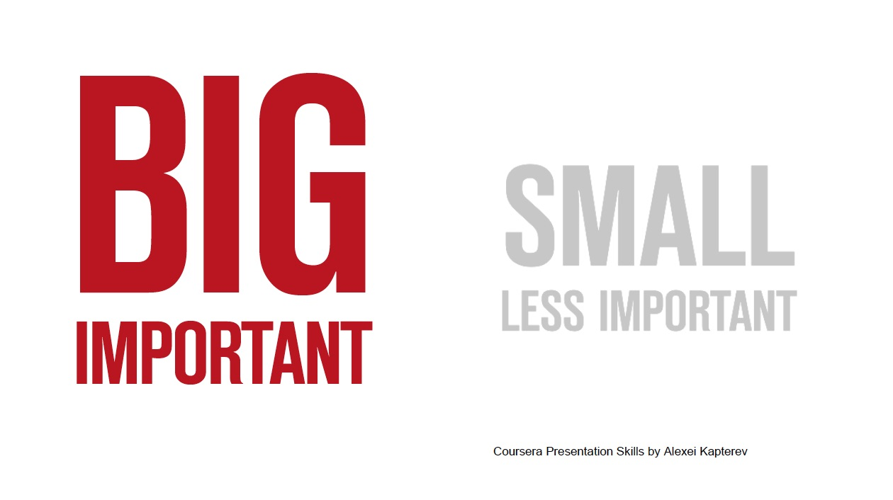
What can I delete?
- Unnecessary words
- Excess decoration
- Elements which are not needed to make a decision
Further reading:
- Designing presentation slides https://www.coursera.org/learn/slides
- Introduction in The Truthful Art: Data, Charts, and Maps for Communication (Voices That Matter), by Alberto Cairo
How much text? No simple rule.
Not enough
- Slides don't work without the speaker
- Speaker forgets what to say
Too much
- Main point is obscured by irrelevant details
- Main point is obscured by irrelevant details
- Main point is obscured by irrelevant details
- Main point is obscured by irrelevant details
- Too much information to retain before the next slide
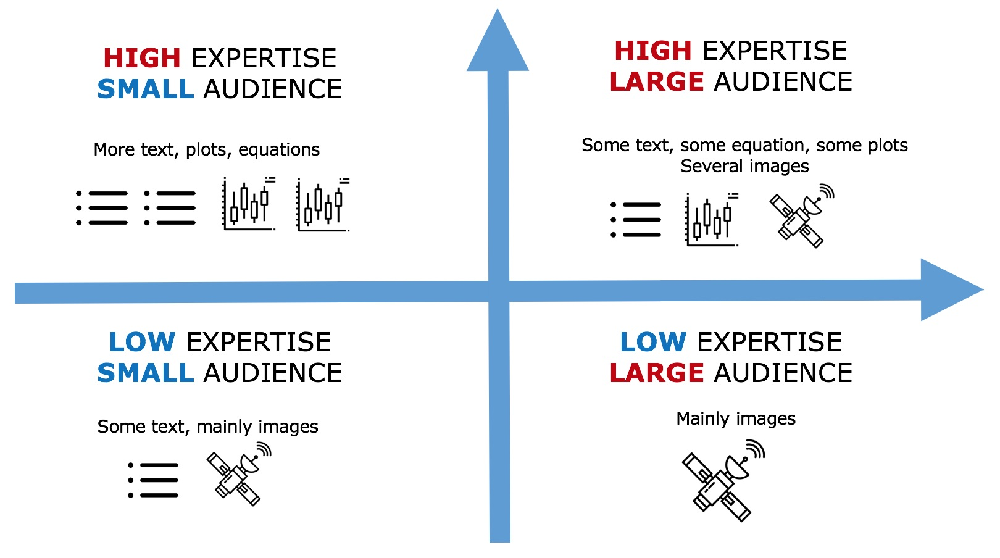
Font
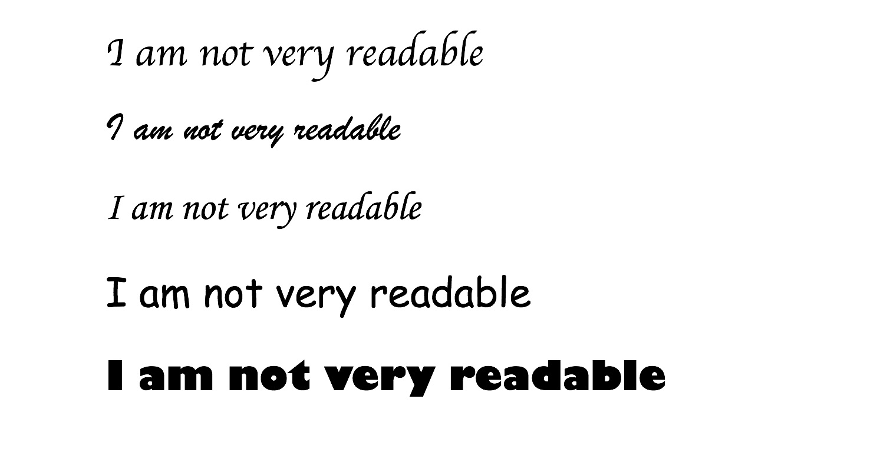
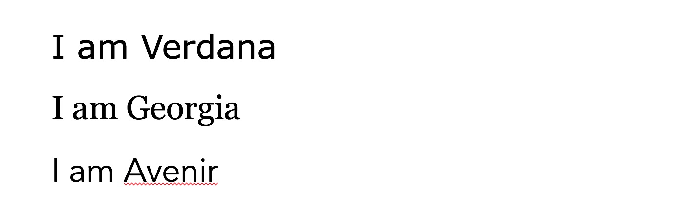
Design changes over history: when you choose a font, implicitly you are also giving a message about yourself.

Sans-serif: less contrast, more contemporary, more geometric, more readable in slides.
Serif: more contrast, hints to tradition, history, sophisticated, emotional, closer to hand-writing. Usually less readable in slides with a lot of text.
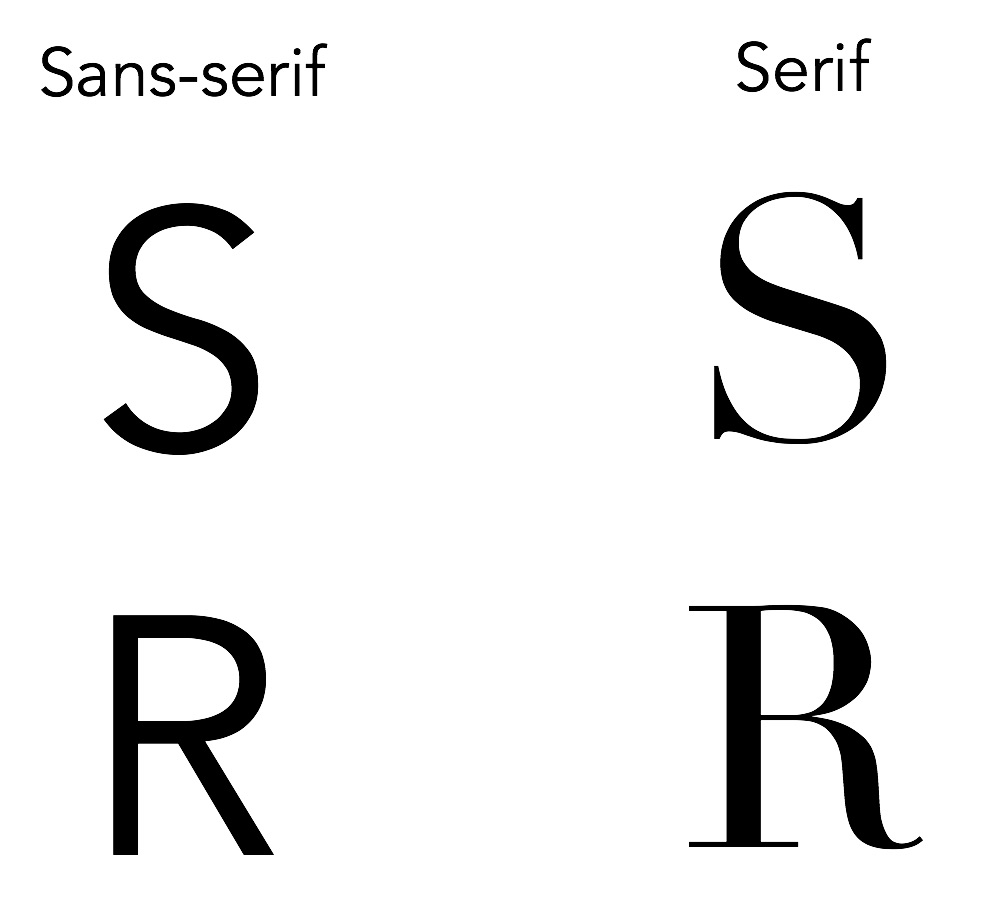
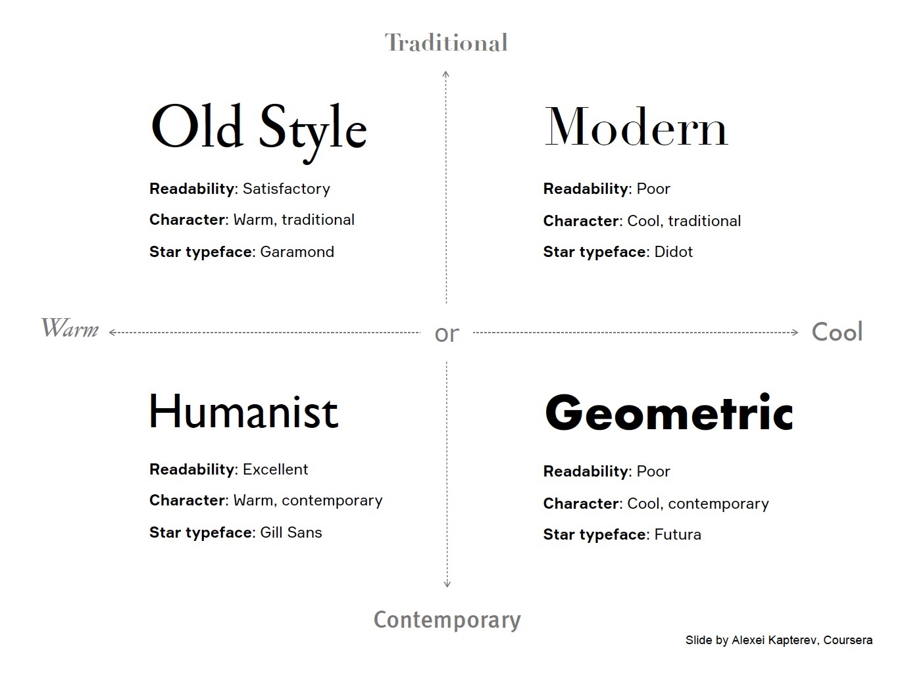
What's wrong with the slide below?
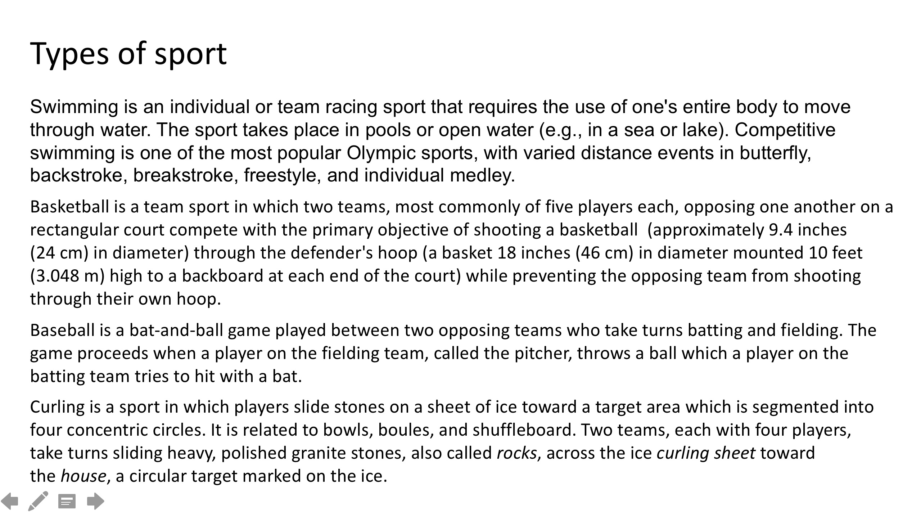
- ‘Too much text' is not the main problem.
- ‘Font size is too small' is also not the main problem.
❌No Margins or white space
❌All main text
❌Different fonts
Let's see how we can improve it to make it more readable, even without removing text.
I can start by identifying what I want the audience to see first:
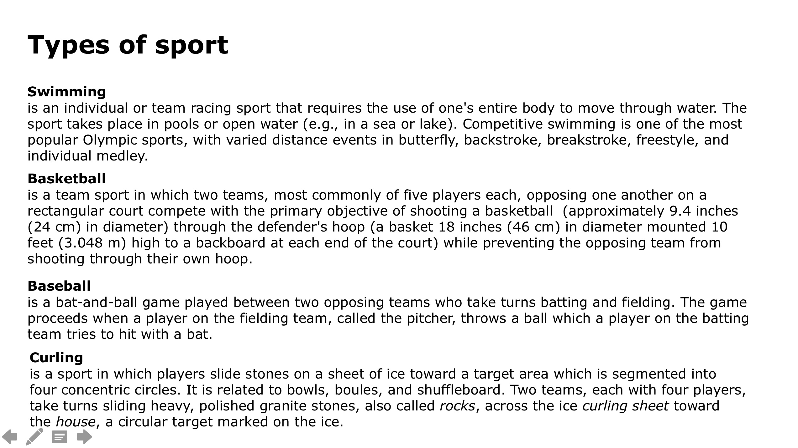
I can increase contrast between what comes first and what comes afterwards:
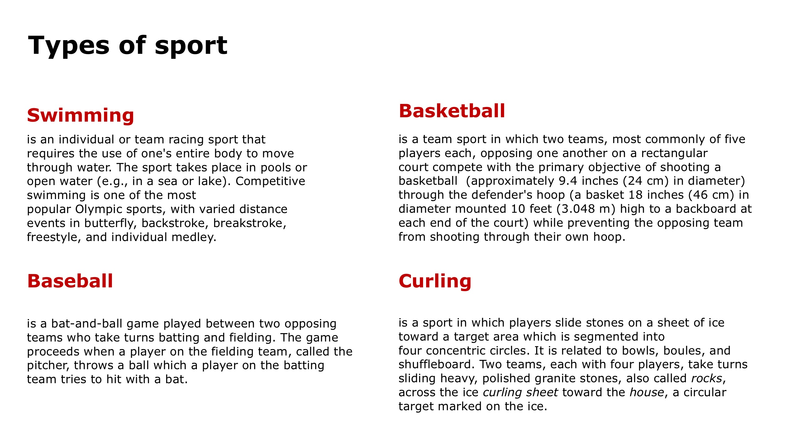
- increased what comes first (now 22 font size, originally 20)
- decreased what comes second (now 14 font size, originally 20)
- organised it in columns rather than in lines across the whole page
- increased white space and margins
I can use icons and make it more fun. I can increase contrast further within the text, with bold/grey.
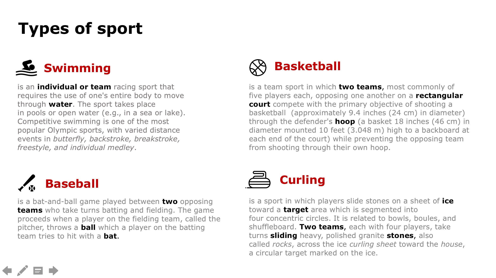
I can further reduce text if I wish, but the main issue was not ‘too much text'.
Icons made by Freepik, Nhor Phai, Icongeek26 from www.flaticon.com
There is no need to use all available colours just because they exist.
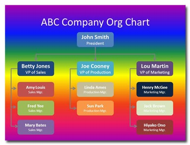
It has to be readable.
✅ dark background with light foreground
✅ light background with dark foreground
🔥Warm vs cool ❄️
Colors can have a general meaning, besides the one given by context.
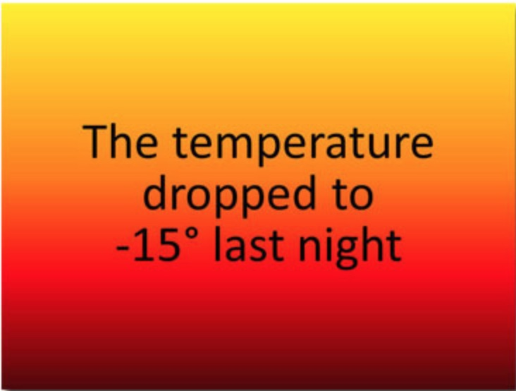
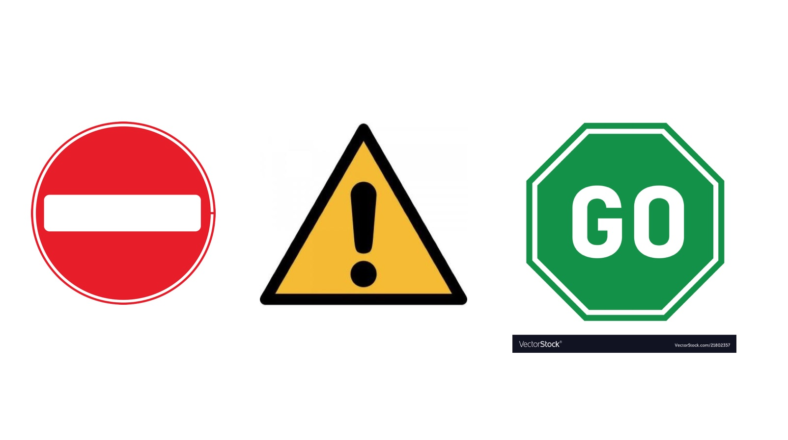
Complementary colours are not necessarily a good choice:
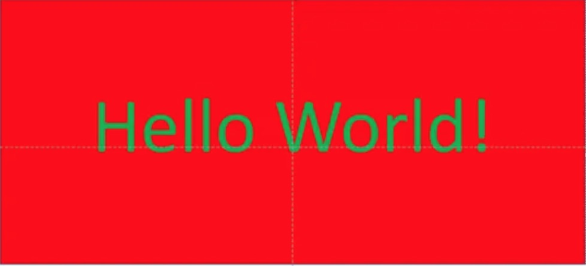
If you don't have a style guide provided by your institution, and you are not an experienced designer:
- Color explorer: color matching generator.
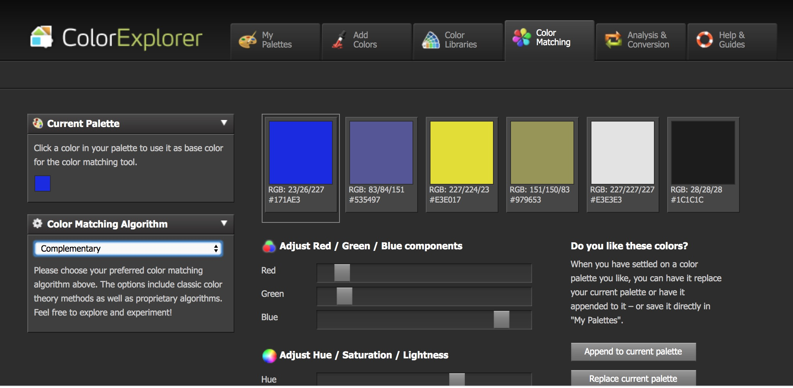
- [Online palette generator: https://coolors.co/]
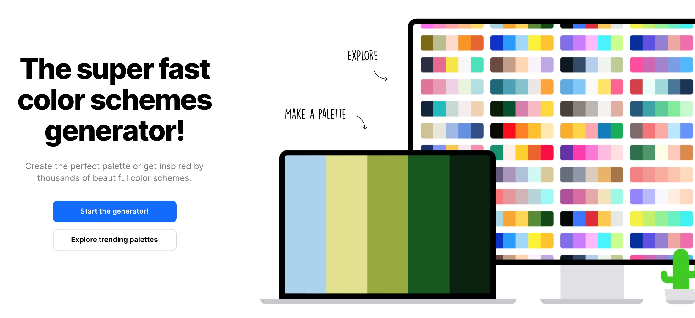
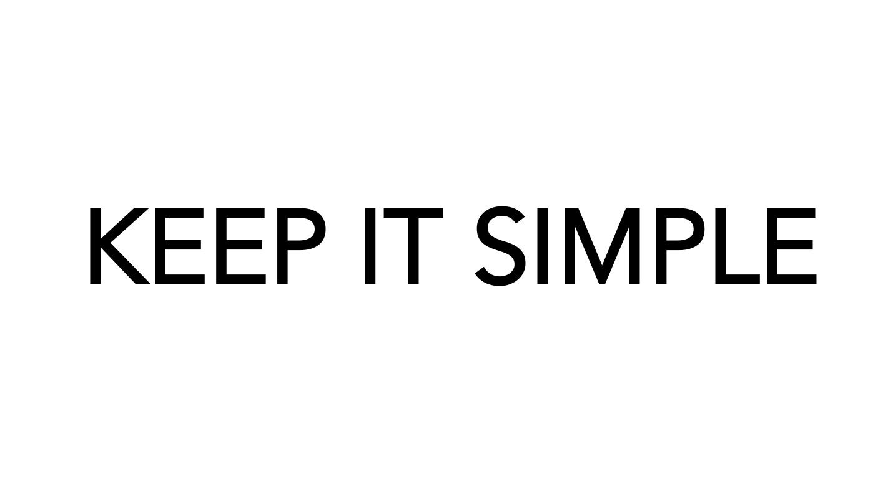
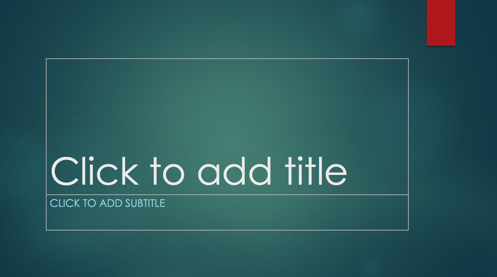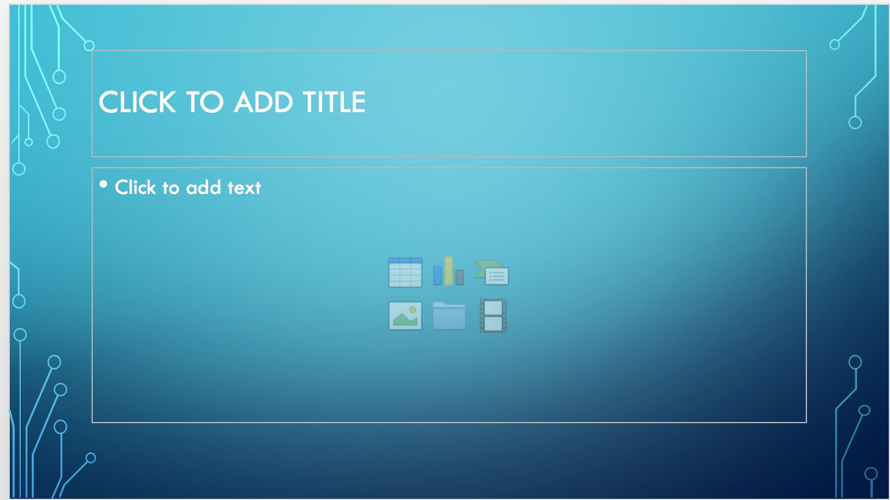
Further reading:https://blog.indezine.com/2011/10/how-to-avoid-four-biggest-powerpoint.htmlhttps://24slides.com/presentbetter/pick-right-colors-presentation/
Plots
Take the time to describe and explain your plot.
✅Describe: guide the eye of the audience through the plot: they have never seen it before! Go from outside to inside. What do you want the audience to look at?
✅Explain: why is it important? What's the message? If you can't find one, then you typically don't need the plot at all.
❌Unnecessary items (grids, boxes around legend, background shading...)
❌ Filling your slide with invisible plots. One visualisation is usually enough.
❌A plot is not a photo or an icon. It's not there to make your slides nicer, it's a visualisation of your results.
Icons
Icons can be found online: https://www.flaticon.com/
They are meant to be small and can be nice when used for itemising (instead of bullet points).
Usually the smaller the better, as they don't have many details.
Photos
Photos can be found online: https://freerangestock.com/ or you can use your own and make it more personal.
Photos can be used to highlight the title and main topic of the slide.
The larger, the better.
❌Avoid photos at the bottom right of the slides.
❌Avoid illustrations that mimic a situation: hard to have the audience feel empathy for such a situation.
Animations
Some people like them very much, some other really don't.
Personally I would avoid them unless you are really good at them.
Either there is a point to them, in making your message clearer, or they can distract the attention, especially in transitions.
When reading, text gives the main message. When speaking, things are much more difficult. Text is only a small part of your message.
According to Mehrabian: 7% text, 38% voice, 55% body language.
Sometimes we think we said something but the message we gave was actually different. Many parameters contribute to your message.
Example: Yesterday I ate a risotto, how was it? Good.
Prosody
Prosody does not refer to the text you pronounce but to how you say it.
Volume/intensity
can be high or low: it is related to how much air you use when you speak.
✅ Pick a person who is far away and talk to that person
❌ Don't talk to yourself
Intonation
You can use a higher or lower pitch. Tone is related to contracting a muscle, the more tense it is, the higher the tone, like for a guitar.
❌avoid speaking always with the same intonation.
Speech rate: (syllables/s)
- very fast (you don't want too much attention, medicines side effects are 9 syllables/s)
- slow (baby-talk, 3-4 syllables/s)
- talking live or remotely requires also a different speech rate
❌avoid speaking always at the same rate.
Silences
Have no fear of silences.
- They can be used to emphasise something.
- They can be used to give the audience the time to think.
- Be aware of them, otherwise they become hesitations.
- Silent pauses
- Filled pauses: pause in which there is no silence.
Disfluences
- filled pauses, vocalisations (eee, oooo)
- nasalitasion (mmmm)
- repetitions (repeat a word),
- false start (start, then adjust sentence while speaking)
- prolongations
Are you aware of which one do you do? Try to be aware of them, and possibly reduce them.
Dominant or not?
Your voice will contribute to identify yourself in a role which is somewhere between dominant and sub-dominant.
Dominant: slow, many silences, thinking a lot about what you don't want to say; it can show confidence but also puts distance with your audience. Not advisable at the start of a talk. It may give the idea that you think you are in a higher role (and it may look like you put the audience in a lower role).
Sub-dominant: fast, many things to say, few silences.
Body language
- Regard: look at the audience (ex. to all committee panel members)
- Preferably not sitting (removing body language)
- Moving is ok. However don't move all the time, it's distracting.
- Comfortable position, calm and ready to say things that you believe are important.
- Easier to feel comfortable if you manage to arrive rested, after a good sleep.
Here are a few exercises using your voice.
Exercise 1.
Pronounce ‘Good morning' with different intentions and ask someone to guess which intention you sent.
- hasty
- happy
- sad
- threatening
- afraid
- insincere
- commanding
- enthusiastic
Exercise 2.
Read the numbers choosing one intention among the ones in brackets:
12 34 23 75 (disgust, enthusiasm, resignation)
4 5 7 9 2 (sadness, fear, satisfaction)
Exercise 3.
Try to pronounce the following sentence using one of the intentions listed below.
We'll talk about that tomorrow
- sad
- enthusiastic
- threatening
Exercise 4.
Read this text
- First following syntactic silences (, . ;)
- Re-read with higher tone or emphasis on words in bold
Massive neutrinos influence the background evolution of the Universe as well as the growth of structure. Being able to model this effect and constrain the sum of their masses is one of the key challenges in modern cosmology.
Massive neutrinos influence the background evolution of the Universe as well as the growth of structure. Being able to model this effect and constrain the sum of their masses is one of the key challenges in modern cosmology.
Massive neutrinos influence the background evolution of the Universe as well as the growth of structure. Being able to model this effect and constrain the sum of their masses is one of the key challenges in modern cosmology.
Exercise 5.
The teacher said the detective is French.
Who is French? The teacher or the detective?
Changing pauses: The teacher said // the detective is French.
The teacher // said the detective // is French.
Changing intonation (without pauses):
The teacher said the detective is French.
The teacher said the detective is French.
The teacher said the detective is French (i.e. not a third person).
How are they different?
- No body language
- Hard or impossible to look at your audience
- Very little feedback
- More difficult to adapt to your audience
- More difficult to manage attention
- More difficult to play with voice intensity
- Need to talk more slowly (delays, overlap, can be hard to hear)
- If you just talk, you end up talking to yourself (which spoils the whole essence of giving a talk!)
- Slides format is different (small screen, low resolution, delay, no pointer)
- Images, videos, plots will always appear small and won't have the same impact
Much more difficult for both speaker and audience to manage and keep the attention. If you give a talk online as you would give it live, there is a high chance it won't be effective.
- Why: adapt your talk to your goal
- Who: help your audience to listen
- Where: location
- What: what is your key message?
- How:
- hierarchy and contrast
- slides (text, font, images)
- story line
- voice (prosody and intent beyond the text)
- unless you really know what you are doing, keep it simple (excessive decorations, animations, transitions, content, plots, etc): can be very distracting and if you over-do, you can obscure your main message.
- While preparing your talk, you are making choices that contribute to your message. Be at least aware of them or you may end giving a message that doesn't correspond to your intention.